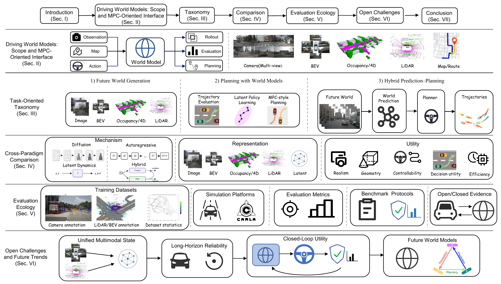
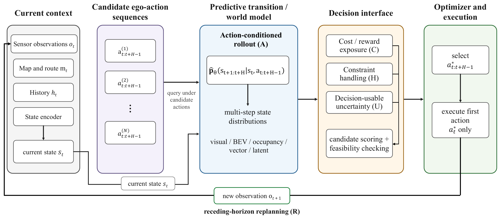
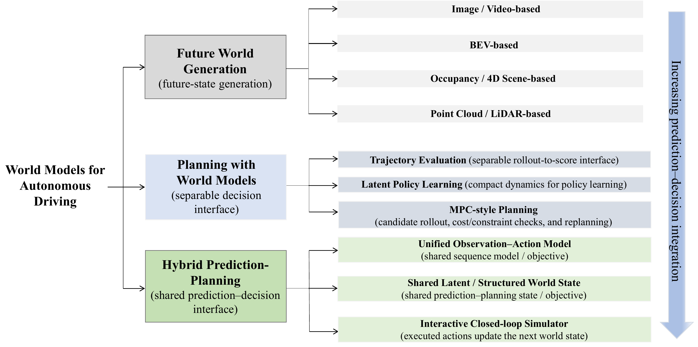
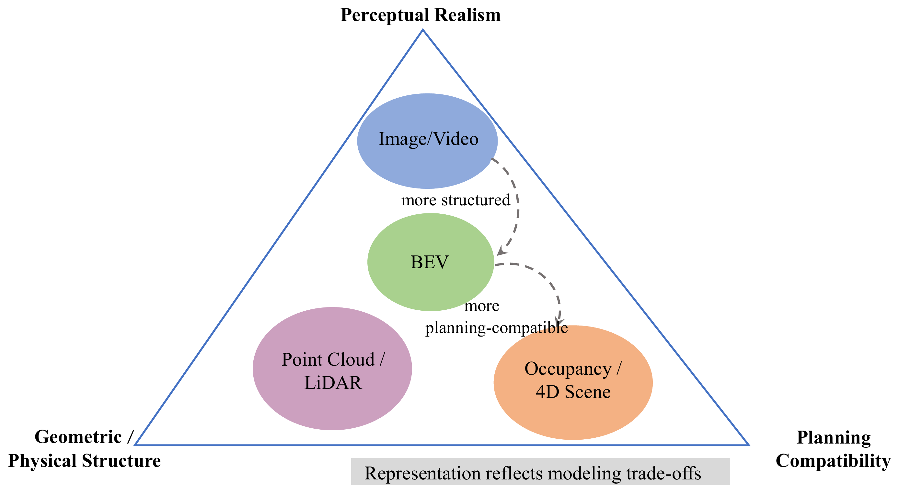
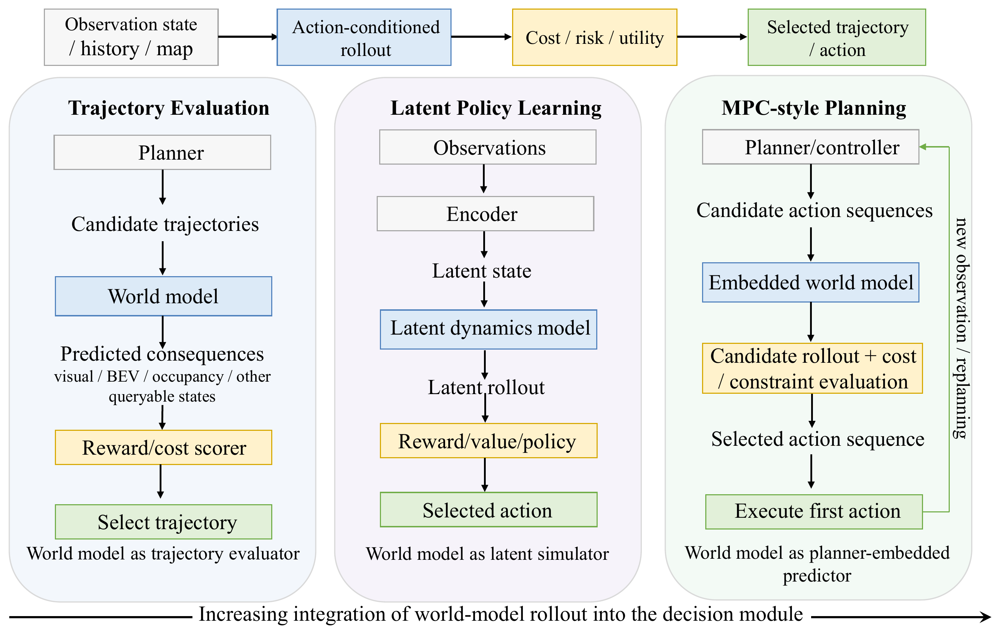
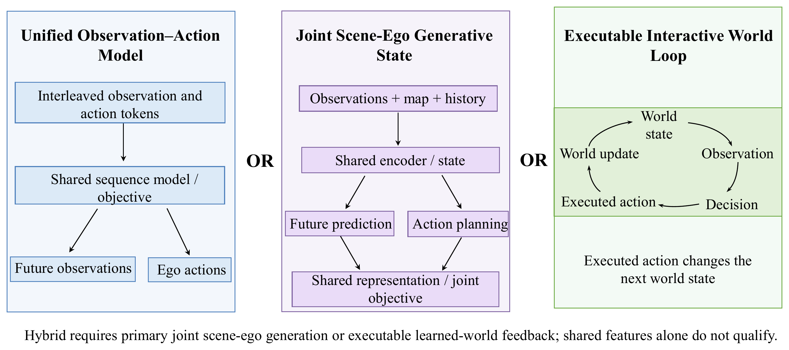
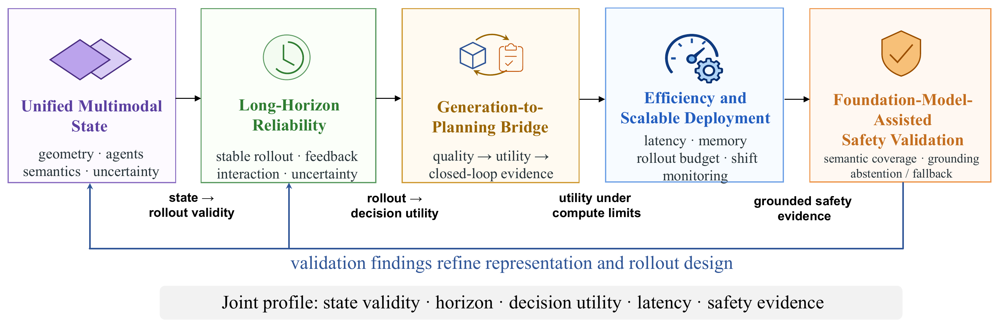

Task-oriented taxonomy
Separates future generation, planning with world models, and hybrid prediction-planning by primary role.
From Future Generation to Decision Making
Predicted futures should be judged by the decisions they support, not by realism alone.
Tongji University · Fudan University · CUHK MMLab · East China Normal University
Shenzhen MSU-BIT University · Shenzhen University · University of British Columbia
The survey argument
It is a transition interface between observations, candidate actions, imagined consequences, and the next decision.
Autonomous driving systems must anticipate traffic evolution, compare candidate actions, and operate safely in closed loop. Recent world models address this need by generating future scenes, rolling out structured states, or exposing transitions for decision making.
This survey takes a model predictive control (MPC) perspective. We compare visual, bird's-eye-view, vectorized, occupancy, LiDAR, and latent states by the interfaces they expose to planners, then connect them to datasets, simulators, metrics, benchmark protocols, computational constraints, and deployment evidence.
Survey structure
The roadmap links the paper's scope, MPC interface, taxonomy, comparison framework, evaluation ecology, and open challenges.

Separates future generation, planning with world models, and hybrid prediction-planning by primary role.
Audits action-conditioned rollout, cost exposure, constraints, uncertainty, and receding-horizon replanning.
Controls protocol identity and prevents open-loop fidelity from being mistaken for closed-loop safety evidence.
From prediction to action
A useful world model must do more than forecast a likely scene. It must answer counterfactual action queries and expose decision-relevant consequences before the replanning deadline.

Can candidate ego actions condition the rollout?
Are rewards or planner-facing costs exposed?
Do explicit penalties, checks, or filters address feasibility?
Is uncertainty usable by the decision module?
Is the transition tested in a receding horizon?
Role before modality
Each model is assigned one primary role based on its objective, system dependencies, and strongest evaluation evidence.

Role 01
Rolls future scenes or structured states forward in visual, BEV, vector, occupancy, or LiDAR spaces. The primary evidence is generation, forecasting, controllability, or augmentation.

Role 02
A separable scorer, optimizer, or policy consumes imagined futures. Shared encoders or auxiliary supervision do not override this role: MILE remains latent policy learning, and DTPP remains MPC-style planning.

Role 03
Executable learned-world feedback takes priority, followed by primary joint scene-ego generation. Shared features alone are insufficient. ReSim qualifies through its agent-generator feedback; Drive-WM uses a separate scorer and remains planning-oriented.

A / C / H / U / R
30 entries shown
29 temporal world models: nine generation-primary, ten planning-primary, and ten hybrid systems. RangeLDM is an additional static boundary comparator.
| Study | Role / state | Decision interface | MPC evidence A / C / H / U / R | Evaluation evidence |
|---|---|---|---|---|
| FIERYICCV 2021 | BEV prediction | Probabilistic BEV dynamics; future instances, motion, and trajectories. | - / - / - / P / - | nuScenes/Lyft; open-loop future prediction and multimodality. |
| BEVWorldarXiv 2025 | BEV / diffusion | Ego-motion-conditioned BEV tokens; joint camera and LiDAR futures. | E / - / - / P / - | nuScenes/CARLA; sensor forecasting and perception/motion-prediction transfer. |
| GAIA-1arXiv 2023 | Visual / AR | Video, text, and ego-action tokens; future camera video. | E / - / P / P / - | Internal driving data; controllable visual generation, without planning evidence. |
| DriveDreamerECCV 2024 | Visual / diffusion | HD-map, box, and ego-action conditions; future video and layout. | E / - / P / P / - | nuScenes; generation quality, controllability, and perception augmentation. |
| DriveDreamer-2AAAI 2025 | Visual / diffusion | Prompt-derived trajectories and layouts; customized multi-view video. | P / - / P / P / - | nuScenes; visual quality, rare-scene control, and perception augmentation. |
| Copilot4DICLR 2024 | LiDAR / diffusion | Ego-pose-conditioned point-cloud tokens; stochastic future point clouds. | E / - / - / P / - | nuScenes/KITTI/AV2; open-loop Chamfer-distance forecasting. |
| OccWorldECCV 2024 | Occupancy / AR | Joint future occupancy and ego-trajectory tokens. | P / - / P / P / - | nuScenes; occupancy forecasting and open-loop planning metrics. |
| DOMEarXiv 2024 | Occupancy / diffusion | Controllable multi-step occupancy generation. | E / - / P / P / - | nuScenes; long-horizon occupancy fidelity and controllability. |
| RangeLDMECCV 2024 | Static LiDAR / diffusion | Range-image generation, upsampling, and inpainting. | - / - / - / - / - | KITTI-360/nuScenes; single-scan synthesis, not temporal rollout. |
| SparseWorldAAAI 2026 | Occupancy / sparse | Ego-state-conditioned sparse queries; 4-D occupancy futures. | P / - / P / - / - | Perception, forecasting, planning, and efficiency; no reported receding-horizon test. |
| MP3CVPR 2021 | Trajectory Evaluation / BEV | BEV map and agent futures feed interpretable planning costs. | P / E / E / E / E | Open-loop and closed-loop urban-driving evaluation. |
| MILENeurIPS 2022 | Latent Policy Learning / latent | Action-conditioned latent simulator supports imitation-policy rollout. | E / - / P / P / P | Closed-loop urban simulation; the world model is primarily used for learned imagination rather than online MPC. |
| DTPPICRA 2024 | MPC-style Planning / trajectory | Candidate trajectory trees condition joint prediction and learned costs. | E / E / E / - / E | nuPlan open-loop, non-reactive and reactive closed-loop planning. |
| Think2DriveECCV 2024 | Latent Policy Learning / latent | Action-conditioned latent transitions, rewards, and policy imagination. | E / E / P / P / P | Closed-loop CARLA-v2 policy evaluation; world-model rollouts primarily support training. |
| Drive-OccWorldAAAI 2025 | Trajectory Evaluation / occupancy | Candidate-conditioned 4-D occupancy and occupancy-based trajectory cost. | E / E / E / P / - | nuScenes/nuScenes-Occupancy/Lyft; forecasting and open-loop planning. |
| Drive-WMCVPR 2024 | Trajectory Evaluation / visual | Candidate maneuvers condition multiview futures that a separable image-reward module compares. | E / E / E / P / - | nuScenes; open-loop planning and visual-forecasting evidence. |
| AdaptiveDriverICRA 2025 | MPC-style Planning / IDM | BehaviorNet predicts reactive IDM parameters; simulated proposals are scored and executed. | E / E / E / P / E | Reactive nuPlan closed-loop evaluation with online MPC-style proposal scoring. |
| WoTEICCV 2025 | Trajectory Evaluation / BEV | Candidate trajectories query future BEV states and trajectory scores. | E / E / P / P / E | NAVSIM open-loop and reactive Bench2Drive closed-loop evaluation. |
| Raw2DriveNeurIPS 2025 | Latent Policy Learning / latent | Action-conditioned aligned latent rollout for policy optimization. | E / E / P / P / P | Closed-loop CARLA-v2 policy evaluation; aligned world-model rollouts primarily support training. |
| AdaWMICLR 2025 | Latent Policy Learning / latent | Action-conditioned dynamics and reward; mismatch-guided model/policy finetuning. | E / E / P / P / P | CARLA interaction and adaptation; learned-policy execution, not online candidate MPC. |
| GenADECCV 2024 | Shared structured latent | Instance-centric future and ego-plan generation share scene tokens. | P / P / P / P / - | nuScenes; open-loop end-to-end planning metrics. |
| DrivingGPTICCV 2025 | Unified AR tokens | Observations and actions are modeled in one autoregressive sequence. | E / - / P / P / - | nuPlan/NAVSIM planning and world-modeling evidence. |
| World4DriveICCV 2025 | Shared physical latent | Intention-conditioned latent futures support multimodal trajectory selection. | E / E / P / P / - | nuScenes/NAVSIM; open-loop planning and non-reactive simulation metrics. |
| DriveArenaICCV 2025 | Interactive simulator | Ego actions update a generative traffic world with simulator feedback. | E / P / P / P / E | Reactive closed-loop simulation and driving evaluation. |
| DriveLaWarXiv 2025 | Shared visual latent | Video latents condition a diffusion action planner; motion is encoded as text. | P / - / P / P / - | Planning benchmarks and video-generation evaluation. |
| UniDrive-WMarXiv 2026 | Unified VLA tokens | Language, vision, and action tokens support understanding, planning, and generation. | E / P / P / P / P | nuScenes and reactive Bench2Drive policy execution; no online candidate-rollout optimization. |
| WorldDrivearXiv 2026 | Shared vision-motion state | Trajectory-conditioned generation, inherited planning representations, and future-aware reward. | E / E / P / P / - | nuScenes, NAVSIM, and NAVSIM-v2; generation and non-reactive planning evidence. |
| DriveWorld-VLAarXiv 2026 | Shared VLA/BEV latent | Action-conditioned BEV imagination and learned reward refine action training. | E / E / P / P / - | nuScenes/NAVSIM-v1/v2; open-loop and non-reactive planning, not reactive execution. |
| VectorWorldarXiv 2026 | Interactive vector/graph simulator | Lane-agent generation and reactive traffic; ego execution updates the scene and feedback. | E / P / E / P / E | nuPlan/Waymo generation; Waymo closed-loop planner evaluation and physics violations. |
| ReSimNeurIPS 2025 | Interactive visual simulator | Action-conditioned video and Video2Reward; generated frames feed back to a driving agent. | E / E / P / P / E | Non-reactive NAVSIM selection; model-only visual feedback demonstrated from two seeded scenes. |
No systems match this search.
H=E includes explicit geometric or dynamic penalties and filtering; it does not imply a hard safety guarantee. Stochastic futures alone receive at most U=P.
Keep claims within their evidence level
Benchmark splits, sensor inputs, route sets, agent reactivity, and metric definitions determine what a comparison can support.
Benchmark resultsKITTI, nuScenes, Waymo, nuPlan, OpenDV, OpenOccupancy, and scene-specific datasets determine modality and scenario coverage.
CARLA, MetaDrive, LimSim, and Waymax differ in state, route, intervention, sensor, and agent-reactivity assumptions.
Perception, geometry, controllability, planning, risk, comfort, progress, rules, and calibration support different claims.
Report median and tail latency, memory, hardware, rollout budgets, and replanning deadlines alongside driving utility. Test monitors and fallback behavior after deadline misses or distribution shift.
Core rule: a claim should not be transferred upward without the corresponding experiment. Visual fidelity does not establish planning utility, and non-reactive replay does not establish reciprocal traffic response.
Each group uses its own split and metrics. Differences in sensors, training, and planners limit comparisons to the reported systems.
Joint ego/agent trajectory latent. Dagger row with 2-s ego history and map, box, and motion supervision.
Occupancy rollout and scoring. Predicted trajectory conditioning without extra ego status.
TemAvg values use the source averages of the 1-, 2-, and 3-s horizons after temporal aggregation.
Intention-conditioned physical latent. Camera-only result on the same test split and metric as WoTE.
BEV rollout and scoring. Sensors, training, and trajectory candidates differ.
Joint autoregressive visual and action tokens. The navmini score is reported separately from the full test split.
BEV scoring in a TCP agent, evaluated in reactive CARLA on the same short-route set as Raw2Drive.
Dual-stream latent reinforcement learning. Training and policy differ from WoTE.
L2: trajectory displacement; CR: collision rate; PDMS: Predictive Driver Model Score; DS: Driving Score; SR: Success Rate.
A dependency chain
Representation determines what survives rollout. Rollout and interfaces determine decision utility. Computation limits how many futures can be queried. Safety validation depends on all of them.

Report where state error first changes the planner's action.
Preserve geometry, topology, semantics, uncertainty, and control invariants.
Link fidelity to action conditioning, calibrated risk, and closed-loop consequence.
Measure the latency-utility frontier at fixed hardware, horizon, and candidate count.
Require physical grounding, abstention, deadlines, and monitor intervention.
Citation
BibTeX for the submitted version of the survey.
@unpublished{huang2026worldmodelsautonomousdriving,
title = {World Models for Autonomous Driving: From Future Generation to Decision Making},
author = {Huang, Han and Yang, Dingkang and Guo, Lulu and Cheng, Jing and Liu, Yang and Leung, Victor C. M. and Chen, Hong},
year = {2026},
note = {Submitted manuscript}
}